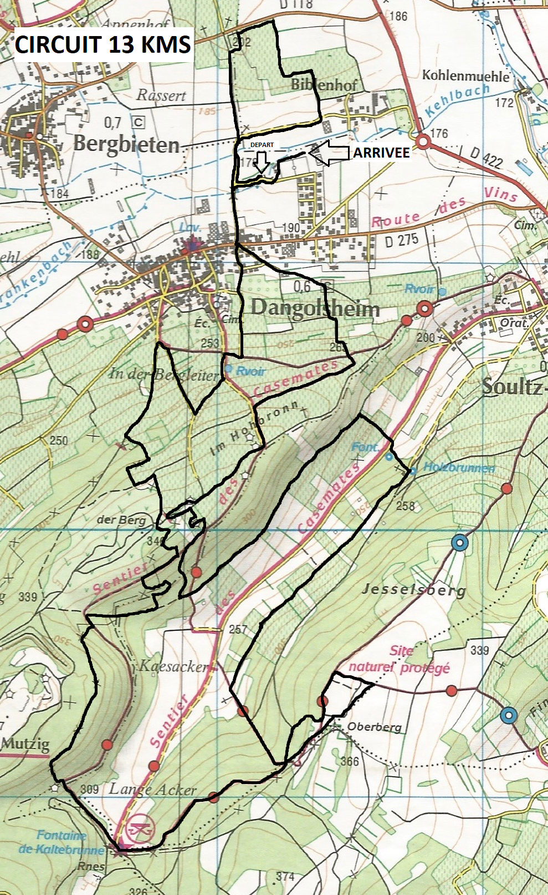
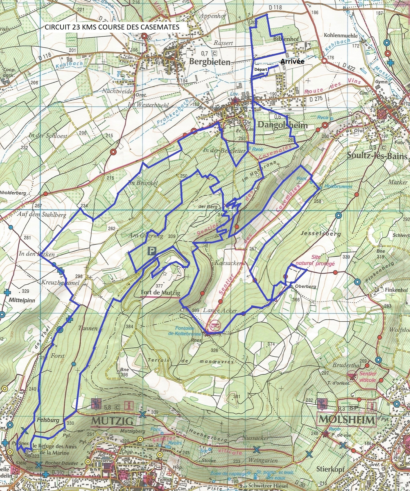

Boum Coeurs
13km / 420mD+
Rush des Casemates
24km / 730mD+
Réglement
Dates La deuxième édition des courses des casemates sera organisée le 10 février 2018 par l'association « les courses des casemates ». Le départ et l'arrivée des courses se dérouleront aux abords du stade de football de Dangolsheim. Les parcours Un trail découverte de 13 kms (423 D+) appelé « Trail des Boums coeurs ». Un trail court de 23kms (680 D+) appelé « Rush des casemates ». Le départ du 23kms sera donné à 09h30, le circuit se fait en une boucle. Le départ du 13 kms sera donné à10h00, le circuit se fait en une boucle. Les parcours se déroulent essentiellement sur chemins et sentiers en milieu naturel, cependant une partie emprunte des voies non fermées à la circulation. Parcours et profils visible sur les-courses-des-casemates.fr Sont interdit sur le parcours : les accompagnateurs – les marcheurs - les véhicules (y compris vélo) non accrédités – les chiens même tenus en laisse – les ravitaillements sauvages – l'utilisation des bâtons sur le 13 et 23 km. Barrière horaire sur le 23 km : 12H00 au kilomètre 11 (bifurcation circuit du 13). Age requis L'épreuve de 13 kms est ouverte aux coureurs licenciés et non licenciés, nés en 2002 ou avant. Une autorisation parentale pour les mineurs est obligatoire. L'épreuve de 23 kms est ouverte aux coureurs licenciés et non licenciés, nés en 2000 ou avant. Inscriptions Uniquement par internet sur Sporkrono Les inscriptions seront closes dès que le nombre maximum de 600 coureurs est atteint pour l'ensemble des parcours. La photocopie de la licence ou du certificat médical est obligatoire lors du retrait du dossard, cette copie sera conservée par l'organisation. Une copie sur téléphone portable n'est pas valable. Tout engagement est personnel, ferme et définitif, et ne peut faire l'objet de remboursement pour quelque motif que ce soit. Aucun transfert d'inscription n'est autorisé pour quelque motif que ce soit. Toute personne rétrocédant son dossard à une tierce personne, sera reconnue responsable en cas d'accident survenu ou provoqué par cette dernière durant l'épreuve. L'organisation décline toute responsabilité en cas d'accident face à ce type de situation.Le dossard devra être entièrement lisible lors de la course. Annulation inscription En cas d’annulation, les frais vous serons intégralement remboursés (hors frais de la plate-forme d’inscription) jusqu’au 28 janvier 2018, uniquement sur présentation d’un certificat médical. A partir du 29 janvier 2018, plus aucun remboursement ne sera effectué. Athlètes handisports le parcours ne permet pas l'accueil des athlètes en fauteuil. Chronométrage le chronométrage sera assuré par la société sporkrono. Retrait des dossards à la salle socioculturel de Dangolsheim Le vendredi 09 février de 17h à 20h Le samedi 10 février à partir de 07h30 Sécurité Un médecin ainsi qu'une équipe de secouristes de la Croix Blanche assureront la sécurité sanitaire des concurrents durant toute l'épreuve. Entraide entre concurrents Tout concurrent est tenu à assistance en cas d'accident d'un autre concurrent, dans l'attente des secours . Assurance La responsabilité de l'organisateur et des participants est couverte par une police assurance souscrite par l'organisation. Les licenciés bénéficient des garanties accordées par l'assurance liée à leur licence. Il incombe aux autres participants de s'assurer personnellement. Ravitaillements Circuit du 13 kms : deux postes de ravitaillements sont prévus au 4ème et 9ème kilomètre. Circuit du 23 kms : quatre postes de ravitaillements sont prévus au 4ème ; 9ème ; 17ème et 19ème kilomètre. Publication des résultats Les résultats seront publiés sur le site d'arrivée et sur le site internet suivant : Sporkrono Récompenses Pour le 13 et 23 km des lots seront remis aux 3 premiers hommes et 3 premières femmes du classement scratch. Les trois premiers hommes et femmes de chaque catégorie seront aussi récompensés. La présence des coureurs récompensés est obligatoire, en cas d'absence les prix seront acquis par l'organisation. Environnement Afin de respecter l'environnement et les espaces naturels traversés et plus précisément le Jesselberg, il est strictement interdit d'abandonner quelque déchet que ce soit sur le parcours sous peine de disqualification immédiate. Annulation de l'épreuve En cas de force majeure, de catastrophe naturelle ou toute autre circonstance mettant en danger la sécurité des concurrents, l'association se réserve le droit d'annuler l'épreuve sans que les concurrents puissent prétendre à un quelconque remboursement. Droit d'image les participants autorisent l'organisation ainsi que leurs ayants droit tels que partenaires et médias, à utiliser les images fixes, audiovisuelles ou diffusées sur les réseaux sociaux, sur lesquelles ils pourraient apparaître, prise à l'occasion de la manifestation. Acceptation du règlement La participation aux courses implique l'acceptation expresse par chaque concurrent du règlement . Le concurrent s'engage sur l'honneur à ne pas anticiper le départ et à parcourir la distance complète avant de franchir la ligne d'arrivée .
Archives résultats
Courses des Boums Coeur : Emmanuel ALLENBACH 00:53:32 / Celine FEDER 01:07:03
Rush des Casemates : Florian WEISSER 01:43:45 / Juliane WIBERT 02:02:06
Résultats 2017